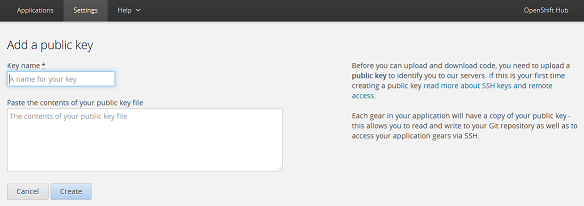
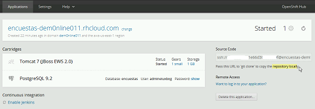
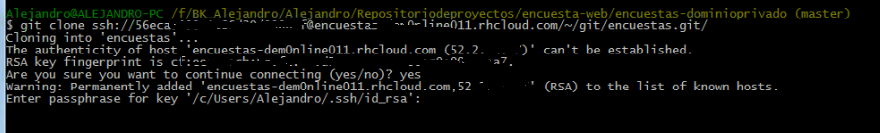
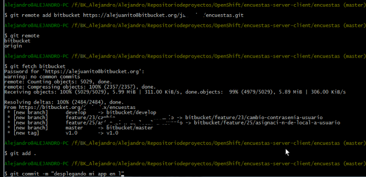
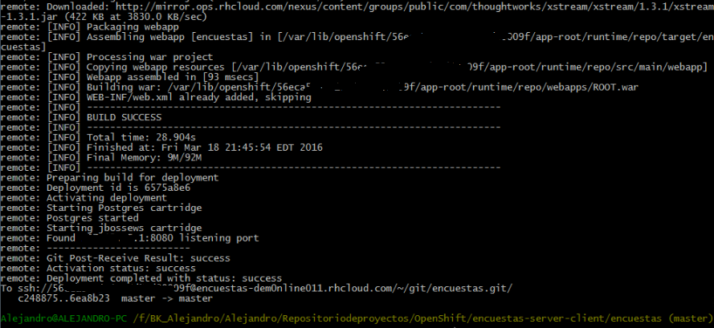

Por mucho tiempo hemos desarrollado nuestras aplicaciones web y siempre las hemos probado en nuestro famoso localhost, sin embargo ya es hora de pasar al siguiente nivel y subirnos a la nube.
Actualmente tenemos muchas alternativas:
- Amazon Web Service AWS
- Open Shift
- Digital Ocean
- Heroku
Todas son buenas y las deberás escoger de acuerdo a la magnitud de tu proyecto para mayor información puedes leer este post. En esta ocasión les mostraré como desplegar tu aplicación web gratuitamente en OPEN SHIFT en unos cuantos pasos
Para el ejemplo desplegaremos una aplicación Java que usa Spring MVC configurada con Maven, como base de datos Postgresql que la tenemos y usaremos nuestro repositorio git para manejar el código
Primero crearemos una cuenta en Open Shift y crearemos nuestra aplicación desde la consola web, luego configuraremos nuestro ambiente local desde el cual haremos los deploys descargando nuestro código fuente desde nuestro repositorio git. Y asi de simple ya tendremos nuestra aplicación corriendo en la nube.
Crear cuenta y aplicación en OPENSHIFT
- Ingresar a la página de OpenShift
- Completar tus datos y verificar tu cuenta desde tu correo
- Iniciar sesión en OpenShift
- Dar click sobre Create your first application now...
- Escoger Tomcat 7 como contenedor de aplicaciones
- Configurar la "Public URL" deberás ingresar el nombre de tu aplicación y crear el nombre del subdominio, en nuestro caso la aplicación se llamará encuestas y el subdominio dem0nline011
- Dejar todas las configuraciones por defecto y crear la aplicación
- Ahora que ya hemos creado nuestra primera aplicación agregaremos nuestra base de datos, guarden en un lugar seguro sus credenciales de base de datos
- Finalizados estos pasos ya tendremos creada nuestra aplicación y nuestra base de datos
Configuración de ambiente de desarrollo
- Si estas en Windows este Post te será util, si estas en linux es probable que ya tengas instalado git y ruby asi que no tendrás mayor problema
- Lo primero que debes hacer es instalar Ruby de preferencia que no sea la última versión
- Instala Git for windows si es que aun no lo tienes
- Despues de instalar ruby abre su consola y deberás instalar las herramientas de OpenShift con el siguiente comando gem install rhc
- Ahora deberás crear tu llave pública que te permitirá conectarte con la aplicación web para lo cual abre la consola cmd o tu shell y digita ssh-keygen -t rsa -b 4096 -c “your@mail" de preferencia debe ser el email con el que creaste tu cuenta en OpenShift, la consola te preguntará si deseas ponerle contraseña y finalmente te creará dos archivos en la carpeta .ssh de tu usuario (id_rsa y id_rsa.pub) abre el archivo id_rsa.pub con tu editor de texto favorito y copia el contenido
- En tu consola web debes ingresar a settings y agregar una nueva llave 
- Ingresa un identificador en name y pega lo copiaste anteriormente en el campo de public key con esto ya habrás configurado tu llave pública.
- Ahora nos toca la parte que mas nos gusta y es la del código para lo cual debemos crear una carpeta donde se almacenará todo nuestro código
- Abrimos nuestra Shell o el Git Bash que hemos instalado y haremos un clone a nuestra aplicación que se encuentra en OpenShift con el siguiente comando git clone ssh://56e......000@nameapp-dem0nline011.rhcloud.com/~/git/jbossews.git/ la ruta la obtendremos desde la consola web 
- Para hacer clone OPENSHIFT requerirá que ingresemos la clave de la llave pública si es que la creamos con clave 
- El código que se ha descargado es un código de prueba del mismo OPENSHIFT ahora tendremos que combinarlo con nuestro verdadero código fuente que se encuentra en nuestro repositorio git. git remote add name-remote https://a....@bitbucket.org/j./nameapp.git esto creará una nueva referencia a nuestro repositorio
- Entremos a la carpeta creada con cd nameapp y con git fetch name-remote bajaremos el código desde nuestro repositorio remoto
- git merge name-remote/master mezclará nuestro nuestro código
Despliegue de la aplicación
- Ahora bastará con hacer git add . y git commit -m "desplegando mi app en la nube" y finalmente git push  
- Luego de hacer push OPENSHIFT se encargará del despliegue y levantará la aplicación.
- Finalizados estos pasos ya tendremos creada nuestra aplicación y nuestra base de datos
Dejaremos este post hasta aqui, en el siguiente post veremos como configurar la base de datos y conectarnos a ella remotamente.